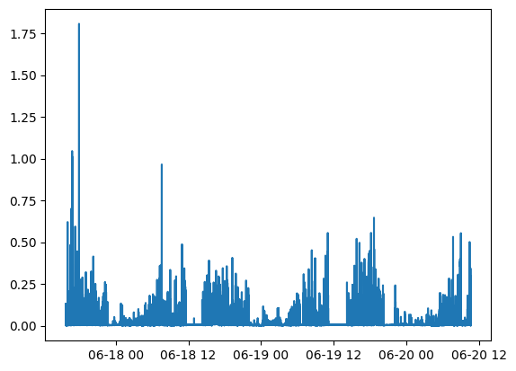
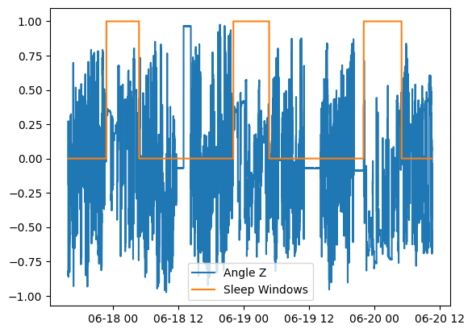
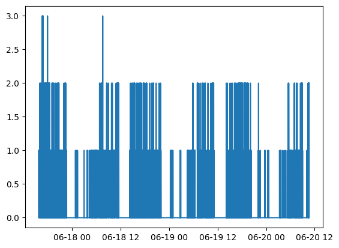
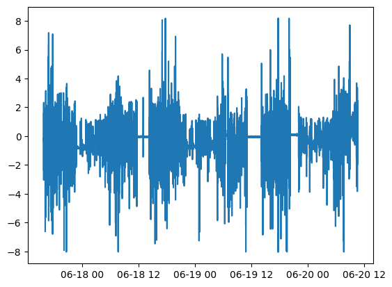
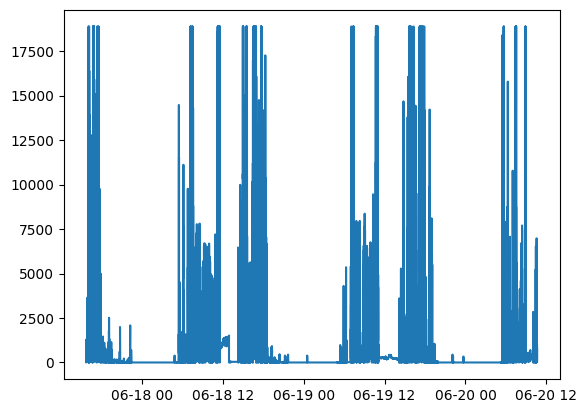
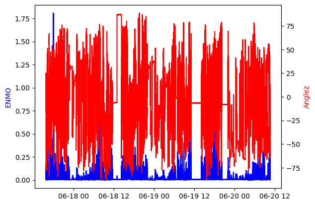
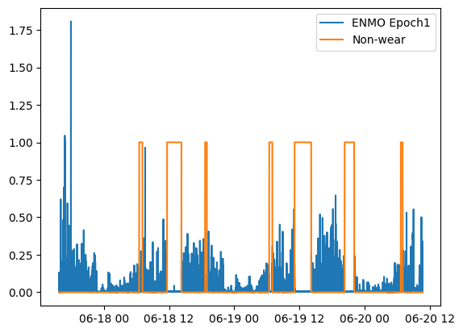
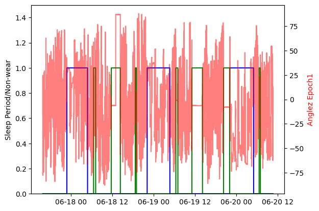

Wristpy Tutorial¶
Introduction¶
Wristpy is a Python library designed for processing and analyzing wrist-worn accelerometer data.
This tutorial will guide you through the basic steps of using wristpy to analyze your accelerometer data. Specifically,
we will cover the following topics through a few examples:
running the default processor, analyzing the output data, and visualizing the results.
loading data and plotting the raw signals.
how to calibrate the data, computing ENMO and angle-z from the calibrated data and then plotting those metrics.
how to obtain non-wear windows and visualize them.
how to obtain sleep windows and visualize them.
Example 1: Running the default processor¶
The orchestrator module of wristpy contains the default processor that will run the entire wristpy processing pipeline. This can be called as simply as:
from wristpy.core import orchestrator
results = orchestrator.run(
input = '/path/to/your/file.gt3x',
output = 'path/to/save/file_name.csv'
)
This runs the processing pipeline with all the default arguments, creates an output .csv file, a .json file with the pipeline configuration parameters, and will create a results object that contains the various output metrics (namely; the specified physical activity metric, angle-z, physical activity classification values, non-wear status, and sleep status).
The orchestrator can also process entire directories. The call to the orchestrator remains largely the same but now output is expected to be a directory and the desired filetype for the saved files can be specified through the output_filetype arguement(default value is “.csv”):
from wristpy.core import orchestrator
results = orchestrator.run(
input = '/path/to/input/dir',
output = '/path/to/output/dir',
output_filetype = ".csv"
)
If users would prefer to process specific files instead of entire directories we recommend looping through a list of file names. The following code snipet will save results objects into a dictionary, and the output files into the desired directory:
from wristpy.core import orchestrator
import pathlib
file_path = pathlib.Path("/path/to/data/")
output_dir = pathlib.Path("/path/to/save/dir/")
file_names = [pathlib.Path("file1.gt3x"), pathlib.Path("file2.gt3x"), pathlib.Path("file3.gt3x")]
results_dict = {}
for file in file_names:
input_path = file_path / file
output_path = output_dir / file.stem + ".csv"
result = orchestrator.run(
input = input_path
output = output_path
)
results_dict[file.stem] = result
We can visualize some of the outputs within the results object, directly, with the following scripts:
Plot the default physical activity metrics (ENMO) across the entire data set:
from matplotlib import pyplot as plt
plt.plot(results.physical_activity_metric.time, results.physical_activity_metric.measurements)

Plot the sleep windows with normalized angle-z data:
from matplotlib import pyplot as plt
plt.plot(results.anglez.time, results.anglez.measurements/90)
plt.plot(results.sleep_status.time, results.sleep_status.measurements)
plt.legend(['Angle Z', 'Sleep Windows'])
plt.show()

We can also view and process these outputs from the saved .csv output file:
import polars as pl
import matplotlib.pyplot as plt
output_results = pl.read_csv('path/to/save/file_name.csv', try_parse_dates=True)
activity_mapping = {
"inactive": 0,
"light": 1,
"moderate": 2,
"vigorous": 3
}
phys_activity = output_results['physical_activity_levels'].replace(activity_mapping).cast(int)
plt.plot(output_results['time'], phys_activity)

It is also possible to do some analysis on these output variables, for example, if we want to find the percent of time spent inactive, or in light, moderate, or vigorous physical activity:
inactivity_count = sum(phys_activity == 0)
light_activity_count = sum(phys_activity == 1)
moderate_activity_count = sum(phys_activity == 2)
vigorous_activity_count = sum(phys_activity == 3)
total_activity_count = len(output_results['physical_activity_levels'])
print(f'Light activity percent: {light_activity_count*100/total_activity_count}')
print(f'Moderate activity percent: {moderate_activity_count*100/total_activity_count}')
print(f'Vigorous activity percent: {vigorous_activity_count*100/total_activity_count}')
print(f'Inactivity percent: {inactivity_count*100/total_activity_count}')
Light activity percent: 11.678738267689539
Moderate activity percent: 1.0778725410363006
Vigorous activity percent: 0.030000428577551107
Inactivity percent: 87.21338876269661
Configuring a custom pipeline
A custom processing pipeline can be easily created by modifying the input arguments to the
orchestrator.runcall.For example:
results = orchestrator.run(input = '/path/to/input/dir', output = '/path/to/output/dir', output_filetype = ".parquet", calibrator="gradient", activity_metric="ag_count", nonwear_algorithm=["detach"], epoch_length=10, thresholds=[0.05, 0.1, 0.3])Complete documentation on these parameters can be found here.
Example 2: Loading data and plotting the raw signals¶
In this example we will go over the built-in functions to directly read the raw accelerometer and light data, and how to quickly visualize this information.
The built-in readers module can be used to load all the sensor and metadata from one of the support wristwatches (.gt3x or .bin), the reader will automatically select the appropriate loading methodology.
from wristpy.io.readers import readers
watch_data = readers.read_watch_data('/path/to/geneactive/file.bin')
We can then visualize the raw accelerometer and light sensor values very easily as follows:
Plot the raw acceleration along the x-axis:
plt.plot(watch_data.acceleration.time, watch_data.acceleration.measurements[:,0])

Plot the light data:
plt.plot(watch_data.lux.time, watch_data.lux.measurements)

Example 3: Plot the epoch-level measurements¶
In this example we will expand on the skills learned in Example 2: we will load the sensor data, calibrate, and then calculate the ENMO and angle-z data in 5s windows (epoch-level data).
from wristpy.io.readers import readers
from wristpy.processing import calibration, metrics
from wristpy.core import computations
watch_data = readers.read_watch_data('/path/to/geneactive/file.bin')
#Calibration phase
calibrator_object = calibration.ConstrainedMinimizationCalibration()
calibrated_data = calibrator_object.run_calibration(watch_data.acceleration)
#Compute the desired metrics
enmo = metrics.euclidean_norm_minus_one(calibrated_data)
anglez = metrics.angle_relative_to_horizontal(calibrated_data)
#Obtain the epoch-level data, default is 5s windows
enmo_epoch1 = computations.moving_mean(enmo)
anglez_epoch1 = computations.moving_mean(anglez)
We can then visualize the epoch1 measurements as:
fig, ax1 = plt.subplots()
ax1.plot(enmo_epoch1.time, enmo_epoch1.measurements, color='blue')
ax1.set_ylabel('ENMO', color='blue')
ax2 = ax1.twinx()
ax2.plot(anglez_epoch1.time, anglez_epoch1.measurements, color='red')
ax2.set_ylabel('Anglez', color='red')
plt.show()

Example 4: Visualize the detected non-wear times¶
In this example we will build on Example 3 by also solving for the non-wear periods, as follows:
from wristpy.io.readers import readers
from wristpy.processing import calibration, metrics
watch_data = readers.read_watch_data('/path/to/geneactive/file.bin')
calibrator_object = calibration.ConstrainedMinimizationCalibration()
calibrated_data = calibrator_object.run_calibration(watch_data.acceleration)
#Find non-wear periods, using the DETACH algorithm
non_wear_array = metrics.detect_nonwear(calibrated_data)
We can then visualize the non-wear periods, in comparison to movement (ENMO at the epoch-level):
from wristpy.core import computations
enmo = metrics.euclidean_norm_minus_one(calibrated_data)
enmo_epoch1 = computations.moving_mean(enmo)
plt.plot(enmo_epoch1.time, enmo_epoch1.measurements)
plt.plot(non_wear_array.time, non_wear_array.measurements)
plt.legend(['ENMO Epoch1', 'Non-wear'])

Example 5: Compute and plot the sleep windows¶
We can visualize the sleep periods in comparison to other metrics; in this example, we compare the sleep windows to the angle-z data and the non-wear periods. In the default pipeline any sleep periods that overlap with non-wear periods are filtered out. This plot shows the sleep periods visualized by a blue trace, non-wear periods are visualized with a green trace, and the angle-z data with the semi-transparent red trace. These are all accessible directly from the results object created with the custom pipeline:
import matplotlib.pyplot as plt
fig, ax1 = plt.subplots()
ax1.plot(results.sleep_status.time, results.sleep_status.measurements, color='blue', label='Sleep Periods')
plt.plot(results.nonwear_status.time, results.nonwear_status.measurements, color='green')
ax2 = ax1.twinx()
ax2.plot(results.anglez.time, results.anglez.measurements, color='red', alpha=0.5)
ax2.set_ylabel('Anglez Epoch1', color='red')
ax1.set_ylabel('Sleep Period/Non-wear')
ax1.set_ylim(0, 1.5)
plt.show()
